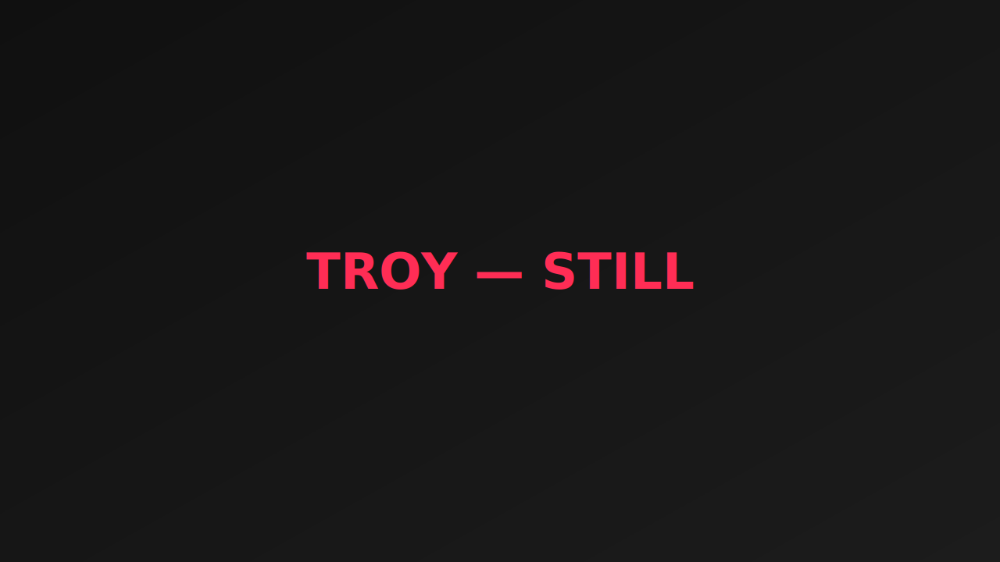

Kuroki Ryota (TROY)
Film Director / 東京
モード、ストリート、カルチャーを横断し、音楽とファッションの文脈でエッジのある映像表現を探求する映像監督。
ミュージックビデオ、キャンペーン、ショートフィルム、インスタレーションまで幅広くディレクションを行い、愛のある圧倒的な作品を目指しています。
- 領域: MV / Brand Film / Campaign / Experimental
- 拠点: 東京（国内外出張可）
- 別名義: TROY
Information
Contact
- Mail: hello@example.com（差替えください）
- Instagram: @troy_loss
Availability
- 企画・脚本・編集まで一貫対応可
- 日英コミュニケーション（要調整）
- 国内外ロケーション手配（要相談）
Press / Awards
- 掲載・受賞歴はここに追記
Works
